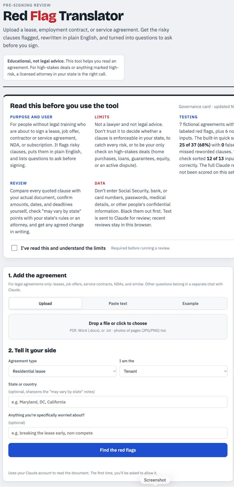
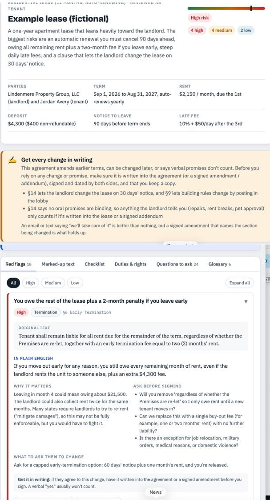

I am working on a daily newsletter that updates me on current events related to regulatory developments pertaining to AI and its use within the legal and tech fields.
7daily newspaper briefings
~10articles and court cases, each with a source link
1 yrhow far back the news goes
The problem
The lawyers in my field–regulatory–will need to be up to date on conversations surrounding AI in the world and its rapid development.
What I built
In my briefings, I asked the tool to create a daily newspaper on current events revolving around:
Regulatory developments
Privacy and data protection
Compliance and corporate risk
AI and legal compliance
Sources:
The Federal Trade Commission
The Securities and Exchange Commission
The Federal Register
Globally, specifically China
The Fine Print · Entry 13 / 9
How I tested it
At the very end of my briefing there is a box that notifies me of the sources that could not be verified but I am provided with the headings so I have the opportunity to search and verify it myself.
What I changed
I added a rule that the briefing only includes cases and articles from the past year, unless it is a pivotal case I must know about or it is connected to recent stories or cases.
I added a rule to separate the news by the countries and cities I choose.
In the most recent briefing (10/5), they were organized as I instructed, and I did not receive any news articles past 2025.
Limits and supervision
I’ve noticed sometimes in the daily briefing within the non-verifiable section, there are some cases or articles that are hallucinated.
What this shows
This briefing shows my creativity and ability to transform the newspaper into how I want it and curate topics of discussion I’m most interested in.
The tool allows you to upload legal contracts and the tool will break down the agreement and its primary job is to flag anything suspicious or inaccurate.
6inputs with different scenarios
10mistakes I included in a test contract
/100risk score for the contract
The problem
The problem that might occur with this tool is that attorneys may solely rely on the tool to point out red flags.
What I built
The app allows you to upload your agreements and tell your side of the story, for example by giving your:
Argument
Party
State/County
Worries

Figure 2. The upload page and governance card.
The Fine Print · Entry 25 / 9
How I tested it
At first, it did not identify all ten mistakes I included in the contract.
What I changed
I included a warning that lets users know to always get contracts and leases in writing, especially if the lease or contract is being revised.
I added a governance note at the very beginning.
I added clarifications in bold to get all work products double checked and verified by an attorney if possible.
Limits and supervision
Some sources the tool presents might not be accurate, so the user must double check all source links and cases referenced.
What this shows
Attorneys cannot solely rely on an AI-powered tool to review contracts, settlements, and any other binding agreement.

Figure 3. Results for the fictional example lease.
I created a colorful, interactive consumer app that helps users determine whether everyday purchases and experiences are worth the money.
/100score on whether it is worth it
4days in a row of posts
The problem
The problem that might occur with this tool is that it might need consistent modifications on its interface and continuous upgrades to keep up with the products being reviewed to give an accurate determination on whether it's worth the money.
What I built
I built a consumer review app that can go on your phone.
Products
Restaurants
Clothes
Books
Vacations
Figure 4. Is It Worth It? on my phone.
The Fine Print · Entry 37 / 9
How I tested it
I completed the regret test for each one and received an accurate ranking based on the answers I gave.
What I changed
I changed the interface multiple times because it looked very generic and was overpowered with emojis, so I uploaded pictures of designs I liked and asked Claude to replicate them.
I added private conversations, so users can talk with other consumers about things they’ve posted, similar to a discussion board.
Limits and supervision
You would also have to ask the system to make the required changes and then manually upload the files into your app, so you will also need to make sure the app is up to date and provides correct information.
What this shows
This app shows that AI-tools have the ability to adapt and change based on what you envision, which allows you to be creative and come up with different ideas based on your interests or specific tasks.